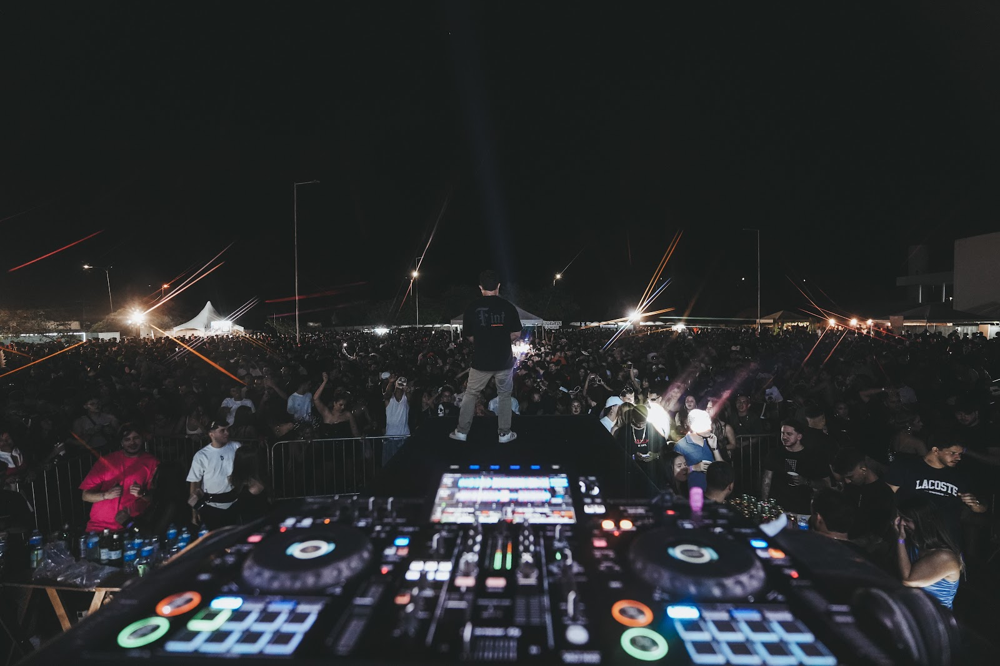

MARCAS &
CORPORATIVO
Repertório versátil, presença profissional e uma experiência alinhada ao perfil de cada marca.
House, brasilidades, Pop e Funk em sets construídos para conectar pessoas e transformar cada evento em uma experiência memorável.
Viny iniciou sua trajetória nas pistas com sets de House e construiu, ao longo dos anos, uma assinatura que atravessa brasilidades, Pop e Funk com naturalidade.
Ver momentos ↓
Do ambiente corporativo à madrugada de um festival, Viny adapta a condução sem diluir sua identidade.
Repertório versátil, presença profissional e uma experiência alinhada ao perfil de cada marca.
Leitura de público e construção de energia para fazer cada momento da celebração acontecer no tempo certo.
Sets de alto impacto, conexão rápida e repertório pensado para pistas grandes e públicos diversos.
A versatilidade não está em tocar de tudo. Está em saber o que tocar, quando tocar e como conduzir a pista até o próximo momento.
Groove, construção e atmosfera: a base da trajetória de Viny.
Referências brasileiras e remixes que ganham nova vida na pista.
Hits reconhecíveis conectados por técnica, narrativa e timing.
Pressão, energia e leitura para mudar o nível da pista na hora certa.
Energia brasileira em primeiro plano. Um recorte de pista intenso, noturno e com identidade própria.


Viny já passou por festivais e eventos de alto padrão em João Pessoa, como Sunfest e Bossa, além de experiências para algumas das maiores marcas do país.
Para consultar disponibilidade, envie a data, a cidade e o formato do seu evento para a equipe do Viny.